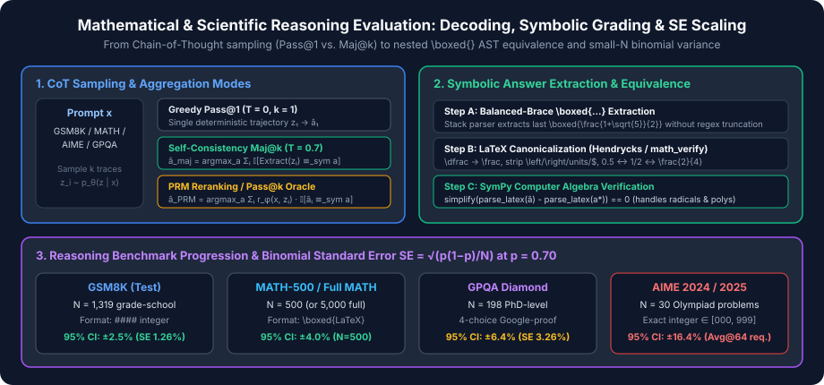

Mathematical & Scientific Reasoning Benchmarks: GSM8K, Hendrycks MATH, GPQA Diamond & AIME
Latent Chain-of-Thought marginalization, Self-Consistency ($\operatorname{maj@}k$) vs. PRM verification, balanced-brace $\text{\textbackslash boxed\{\}}$ AST canonicalization, and small-$N$ statistical variance on GPQA Diamond and AIME.
Unlike multiple-choice factual benchmarks where a model scores a single target token $c \in \{\text{A}, \text{B}, \text{C}, \text{D}\}$ in one forward pass, mathematical and scientific reasoning benchmarks require generative multi-step deduction. The model must autoregressively sample a reasoning trajectory (Chain-of-Thought, $z = (z_1, \dots, z_m)$) before emitting a final symbolic or numerical answer $\hat{a} = \operatorname{Extract}(z)$.
In this chapter, we examine the four cornerstone benchmarks used to evaluate reasoning across base pretraining (few-shot CoT), supervised fine-tuning (SFT), and reinforcement learning with verifiable rewards (RLVR): GSM8K, Hendrycks MATH / MATH-500, AIME 2024/2025, and GPQA Diamond.

1. Latent Chain-of-Thought Marginalization: $\operatorname{Pass@}1$, $\operatorname{Maj@}k$ & PRM Reranking
Given a problem prompt $x$, an LLM defines a joint probability distribution $P_\theta(z, a \mid x)$ over reasoning paths $z$ and final extracted answers $a = \operatorname{Extract}(z)$. Because many distinct derivation paths $z$ can arrive at the same mathematical answer $a$, the true marginal probability assigned to answer $a$ is:
Because summing over the exponential space of reasoning chains $\mathcal{Z}$ is intractable, evaluation harnesses approximate this objective under four distinct decoding regimes:
- Greedy $\operatorname{Pass@}1$ ($T = 0$): Approximates the marginal distribution by the single maximum-likelihood token trajectory $\hat{z}_{\text{greedy}}$ and checks $\mathbb{I}[\operatorname{Extract}(\hat{z}_{\text{greedy}}) \equiv_{\text{sym}} a^*]$.
-
Unbiased Sampled $\operatorname{Avg@}K$ ($T > 0$): Samples $K$ independent trajectories $z^{(1)}, \dots, z^{(K)} \sim P_\theta(\cdot \mid x)$ at temperature $T \in [0.6, 1.0]$ and computes the empirical mean accuracy:
$$\operatorname{Avg@}K = \frac{1}{K}\sum_{i=1}^{K} \mathbb{I}\!\left[\operatorname{Extract}(z^{(i)}) \equiv_{\text{sym}} a^*\right]$$This is essential on small-$N$ benchmarks like AIME ($N=30$) where greedy decoding has high variance.
-
Self-Consistency Majority Voting ($\operatorname{Maj@}k$ / $\operatorname{Cons@}k$, Wang et al., 2023): Estimates the marginalized answer mode via Monte Carlo sampling over $k$ chains:
$$\hat{a}_{\text{maj@}k} = \arg\max_{a \in \mathcal{A}_{\text{canonical}}} \sum_{i=1}^{k} \mathbb{I}\!\left[\operatorname{Extract}(z^{(i)}) \equiv_{\text{sym}} a\right]$$
-
Process Reward Model (PRM) Weighted Voting & Oracle $\operatorname{Pass@}k$: When a step-level verifier $r_\phi(x, z) = \prod_{t=1}^{S} P_\phi(\text{step } t \text{ valid} \mid x, z_{\le t})$ is available (Lightman et al., 2023), trajectories are weighted by their verifier score:
$$\hat{a}_{\text{PRM@}k} = \arg\max_{a} \sum_{i=1}^{k} r_\phi(x, z^{(i)})\,\mathbb{I}\!\left[\operatorname{Extract}(z^{(i)}) \equiv_{\text{sym}} a\right]$$Meanwhile, $\operatorname{Pass@}k$ measures the upper-bound oracle capability—whether at least one of $k$ sampled chains solves the problem.
2. GSM8K: Grade-School Math & Extraction Fragility
GSM8K (Cobbe et al., 2021) consists of $8{,}792$ grade-school math word problems ($7{,}473$ training, $1{,}319$ test) crafted by human problem writers. Each problem is solvable by a bright middle-school student using $2$ to $8$ elementary arithmetic operations ($+, -, \times, \div$).
Ground-truth solutions in GSM8K include inline calculator execution tags (`<<48/2=24>>24`) and terminate with a canonical four-hash delimiter:
Natalia sold 48/2 = <<48/2=24>>24 clips in May.
Natalia sold 48+24 = <<48+24=72>>72 clips altogether in April and May.
#### 72strict-match: matchesr"#### (\-?[0-9\.\,]+)". If an instruction-tuned model outputs\boxed{72}orThe answer is **72**.without####,strict-matchscores it $0.0$!flexible-extract: falls back to extracting the last numeric token in the generation after stripping commas and `$` symbols.
3. Hendrycks MATH, MATH-500 & Symbolic Equivalence
As frontier models saturated GSM8K ($>95\%$), Hendrycks MATH (Hendrycks et al., 2021) became the primary workhorse for mathematical reasoning. It comprises $12{,}500$ problems ($7{,}500$ training, $5{,}000$ test) sourced from AMC 10, AMC 12, and AIME competitions across 7 subjects (Prealgebra, Algebra, Number Theory, Counting & Probability, Geometry, Intermediate Algebra, Precalculus) and 5 difficulty levels (Level 1 to Level 5).
Because running generative CoT across all $5{,}000$ test problems is computationally expensive—and because earlier works inconsistently subsampled the test split—Lightman et al. (2023) standardized MATH-500: a stratified, uniformly sampled $500$-problem test set that preserves the exact subject and difficulty distribution of the full $5{,}000$-problem test split.
Why Grading MATH Requires a Stack Parser + Computer Algebra System
Unlike GSM8K's integer answers, MATH ground truths are arbitrary LaTeX expressions inside `\boxed{...}`: radicals ($\frac{1-\sqrt{5}}{2}$), intervals ($[0, \infty)$), matrices, polynomials, and pi multiples ($\frac{3\pi}{4}$). Grading requires a three-stage pipeline:
-
Balanced-Brace `\boxed{...}` Extraction: A regular expression like
r"\\boxed\{(.*?)\}"fails on `\boxed{\frac{1}{2}}` because it stops at the first closing brace `}` after `1`, returning `\frac{1`! A stack-based brace counter must locate the last occurrence of `\boxed{` in the response and scan forward until the brace depth returns to zero. - LaTeX Macro Normalization: Before symbolic parsing, standard harnesses (`hendrycks_math` / HuggingFace `math_verify`) normalize macros: `\dfrac` and `\tfrac` $\to$ `\frac`, `\left` and `\right` removed, units/text wrappers (`\text{ cm}`, `\mbox{}`) stripped, shorthand fractions `\frac12` expanded to `\frac{1}{2}`, and leading/trailing `$` symbols removed.
-
SymPy Symbolic Equivalence ($\hat{a} \equiv_{\text{sym}} a^*$): Two differently formatted strings such as
\frac{\sqrt{2}}{2},\frac{1}{\sqrt{2}}, and2^{-1/2}represent the exact same real number. The grader parses both normalized LaTeX strings into SymPy Abstract Syntax Trees (ASTs) and checks whether their algebraic difference simplifies to zero:$$\operatorname{is\_equiv}(\hat{a}, a^*) \iff \left(\operatorname{norm}(\hat{a}) == \operatorname{norm}(a^*)\right) \;\lor\; \left(\operatorname{simplify}\!\left(\operatorname{AST}(\hat{a}) - \operatorname{AST}(a^*)\right) == 0\right)$$
4. AIME & GPQA Diamond: Frontier Reasoning & Small-$N$ Statistics
As RL-trained reasoning models (`o1`, `o3`, `DeepSeek-R1`) surpassed $90\%$ on MATH-500, evaluation shifted to two ultra-hard benchmarks:
- AIME 2024 / AIME 2025 (American Invitational Mathematics Examination): Contains $N = 30$ Olympiad-qualifier problems per year ($15$ from AIME I, $15$ from AIME II). Every AIME problem is specifically designed so that its final answer is a unique integer in $\{0, 1, \dots, 999\}$. This completely eliminates symbolic grading ambiguity while testing $10\text{--}30$ step mathematical insight. Moreover, using the latest competition year serves as a strict temporal contamination firewall.
-
GPQA Diamond (Graduate-Level Google-Proof Q&A, Rein et al., 2023): $448$ multiple-choice questions ($198$ in the highest-quality Diamond subset) authored by domain PhDs in Quantum Mechanics, Organic Chemistry, Astrophysics, and Molecular Biology. Each question underwent a rigorous two-tier human validation:
- Expert Validators (PhDs in the same narrow discipline) achieved $65\%$ overall and $74\%$ on GPQA Diamond.
- Skilled Non-Expert Validators (PhDs in different hard sciences, e.g., a Physics PhD answering an Organic Synthesis question, given $30+$ minutes and unrestricted Google search access) achieved only $34\%$ accuracy (barely above the $25\%$ 4-choice random baseline).
The Small-$N$ Binomial Standard Error Problem
If a benchmark consists of $N$ independent problems and a model has true solve probability $p$, the empirical accuracy $\hat{p} = \frac{1}{N}\sum_{i=1}^{N} X_i$ has binomial standard error:
On AIME ($N = 30$) at $\hat{p} = 0.50$, a single run has $\operatorname{SE} = \sqrt{0.25 / 30} = 9.13\%$ ($\pm 17.9\%$ 95% CI—a single problem changes the score by $3.33$ percentage points!). By evaluating $K = 64$ independent trajectories per problem ($\operatorname{Avg@}64$), the conditional Monte Carlo sampling variance $\frac{1}{N^2}\sum_{i=1}^{N} \frac{p_i(1-p_i)}{K}$ is reduced by a factor of $64\times$, stabilizing model-to-model comparisons.
| Benchmark | Test Size ($N$) | Answer Format | Primary Metric | $\operatorname{SE}$ at $p=0.70$ ($K=1$) | 95% CI Half-Width |
|---|---|---|---|---|---|
| GSM8K | $1{,}319$ | Integer / Float (`#### n`) | 8-shot / 0-shot CoT Pass@1 | $1.26\%$ | $\pm 2.47\%$ |
| Hendrycks MATH (Full) | $5{,}000$ | LaTeX `\boxed{expr}` | SymPy Symbolic Pass@1 | $0.65\%$ | $\pm 1.27\%$ |
| MATH-500 | $500$ | LaTeX `\boxed{expr}` | SymPy Symbolic Pass@1 | $2.05\%$ | $\pm 4.02\%$ |
| GPQA Diamond | $198$ | 4-Choice (`\boxed{A..D}`) | CoT Avg@8 / Pass@1 | $3.26\%$ | $\pm 6.38\%$ |
| AIME 2024 / 2025 | $30$ | Integer $\in [000, 999]$ | $\operatorname{Avg@}64$ & $\operatorname{Cons@}64$ | $8.37\%$ | $\pm 16.40\%$ |
5. Reference Implementation: Balanced `\boxed{}` Grader, $\operatorname{Maj@}k$ & PRM Voting
The self-contained Python script below implements stack-based nested `\boxed{...}` extraction, canonical LaTeX normalization and numeric/symbolic equivalence verification, Self-Consistency $\operatorname{Maj@}k$, PRM-weighted voting, and binomial standard error decomposition.
from collections import Counter
from fractions import Fraction
import math
import re
def extract_last_boxed(text: str) -> str | None:
"""Extract the content of the last \\boxed{...} using a balanced-brace stack."""
idx = text.rfind("\\boxed{")
if idx == -1:
return None
start = idx + len("\\boxed{")
depth = 1
i = start
while i < len(text) and depth > 0:
if text[i] == "{":
depth += 1
elif text[i] == "}":
depth -= 1
i += 1
return text[start : i - 1].strip() if depth == 0 else None
def normalize_math_expr(expr: str) -> str:
"""Canonicalize LaTeX math strings (Hendrycks MATH / math_verify style)."""
s = expr.strip().replace("$", "")
s = s.replace("\\left", "").replace("\\right", "")
s = s.replace("\\dfrac", "\\frac").replace("\\tfrac", "\\frac")
s = re.sub(r"\\text\{.*?\}", "", s)
s = s.replace(" ", "")
# Convert \frac{a}{b} with integer a, b into reduced rational string
m = re.fullmatch(r"(-?)\\frac\{(-?\d+)\}\{(-?\d+)\}", s)
if m:
sign = -1 if m.group(1) == "-" else 1
num, den = int(m.group(2)), int(m.group(3))
frac = Fraction(sign * num, den)
return str(frac.numerator) if frac.denominator == 1 else f"{frac.numerator}/{frac.denominator}"
# Normalize plain decimals or integers/fractions
try:
frac = Fraction(s).limit_denominator(10**6)
return str(frac.numerator) if frac.denominator == 1 else f"{frac.numerator}/{frac.denominator}"
except ValueError:
return s
def evaluate_cot_samples(
samples: list[tuple[str, float]], gold_expr: str
) -> dict[str, object]:
"""
Compute Avg@K, Oracle Pass@K, Self-Consistency Maj@K, and PRM-weighted vote.
Each sample is (raw_cot_output, prm_score).
"""
gold_norm = normalize_math_expr(gold_expr)
extracted = [normalize_math_expr(extract_last_boxed(txt) or "") for txt, _ in samples]
correct_flags = [ans == gold_norm for ans in extracted]
avg_at_k = sum(correct_flags) / len(samples)
pass_at_k = any(correct_flags)
# Self-Consistency Maj@K (unweighted mode over canonicalized answers)
counts = Counter(extracted)
maj_answer = counts.most_common(1)[0][0]
# PRM-weighted voting
prm_totals: dict[str, float] = {}
for ans, (_, prm_weight) in zip(extracted, samples):
prm_totals[ans] = prm_totals.get(ans, 0.0) + prm_weight
prm_answer = max(prm_totals.items(), key=lambda kv: kv[1])[0]
return {
"gold_norm": gold_norm,
"avg_at_k": avg_at_k,
"pass_at_k": pass_at_k,
"maj_answer": maj_answer,
"maj_correct": maj_answer == gold_norm,
"prm_answer": prm_answer,
"prm_correct": prm_answer == gold_norm,
}
if __name__ == "__main__":
# 1. Verify nested \boxed{} extraction & equivalence across LaTeX variants
raw_trace = "Step 1: \\boxed{intermediate} ... Final result: \\boxed{\\dfrac{6}{12} \\text{ units}}"
extracted_raw = extract_last_boxed(raw_trace)
assert extracted_raw == "\\dfrac{6}{12} \\text{ units}"
assert normalize_math_expr(extracted_raw) == normalize_math_expr("0.5") == "1/2"
# 2. Compare Avg@5, Maj@5, and PRM@5 on a problem where 2 traces have high PRM confidence
sampled_traces = [
("We compute 2/4: \\boxed{\\frac{2}{4}}", 0.94),
("Simplifying gives \\boxed{0.5}", 0.91),
("Common mistake: \\boxed{\\frac{1}{4}}", 0.18),
("Another slip: \\boxed{0.25}", 0.22),
("Slip again: \\boxed{1/4}", 0.15),
]
res = evaluate_cot_samples(sampled_traces, gold_expr="\\frac{1}{2}")
print(
f"Avg@5: {res['avg_at_k']:.2f} | Maj@5: {res['maj_answer']} (correct={res['maj_correct']}) "
f"| PRM@5: {res['prm_answer']} (correct={res['prm_correct']})"
)
# Unweighted Maj@5 picks '1/4' (3 votes vs 2), whereas PRM@5 picks '1/2' (weight 1.85 vs 0.55)
assert not res["maj_correct"] and res["prm_correct"]
# 3. Verify binomial SE on AIME (N=30) vs GSM8K (N=1319) at p=0.70
se_aime = math.sqrt(0.70 * 0.30 / 30)
se_gsm8k = math.sqrt(0.70 * 0.30 / 1319)
print(f"Binomial SE at p=0.70 -> AIME (N=30): {se_aime:.4%}, GSM8K (N=1319): {se_gsm8k:.4%}")
assert se_aime > 6.0 * se_gsm8k